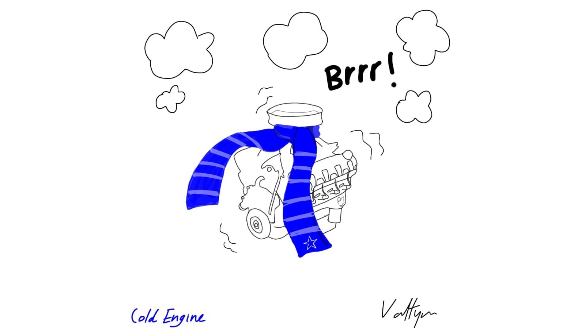
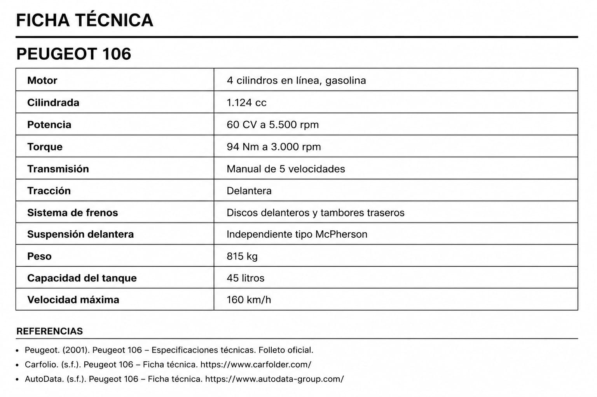

El coche que me enseñó la libertad
ML- Entre el instituto, las primeras salidas y un coche familiar que terminó marcando toda una etapa.21 mayo 2026 | 17:00 pm

“Mi primer coche lo tuve en el 2000.No era nuevo, pero era un coche muy divertido, con él aprendí muchas cosas y hasta lo llevé al instituto.” afirma anónimo Nos cuenta que con 18 años tuvo que repetir segundo de bachiller, pero a su favor tenía ya la escuela de conducción pagada y para diciembre del año 2000 pudo sacar su licencia, en el siguiente año el usaba su auto para ir a la escuela, aunque no era el auto del año para el significaba mucho. Era un auto familiar un (Peugeot 106.) “era un coche muy sencillo pero muy divertido, muy cuidado, te ponía alguna cosa difícil, por ejemplo, tendía a calarse con frio, aprendí mucho con él”
¿Por qué el Peugeot 106 tendía a calarse en frio?
“En los motores de carburador, el combustible se vaporiza con mayor dificultad cuando el motor está frío. Para facilitar el arranque, estos vehículos incorporaban un cebador (choque), manual o automático, que enriquecía temporalmente la mezcla de aire y combustible hasta que el motor alcanzaba su temperatura de funcionamiento. Si no se utilizaba correctamente o se desactivaba demasiado pronto, el motor podía calarse.” (Fuente: Engineer Fix, "How a Choke Works to Start a Cold Engine").

cold peugeot- ML(valtyna)
Peugeot 106 y Citroen Saxo
Aunque son marcas diferentes, estos dos autos fueron diseñados por el grupo PSA, comparten ciertas partes de su estructura, piezas mecánicas, transmisión y motor, pero cada uno conservo su personalidad y diseño
106 Electrique
El Peugeot 106 Electrique fue lanzado en 1995, Considerado uno de los primeros autos fabricados en serie en Europa, Utilizaba baterías de (Ni-Cd), con una velocidad que alcanzaba los 90 km/h. tenía una autonomía entre 80 - 100 km, estaba diseñado para el uso urbano
